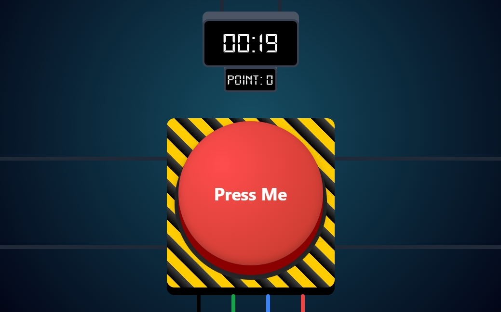
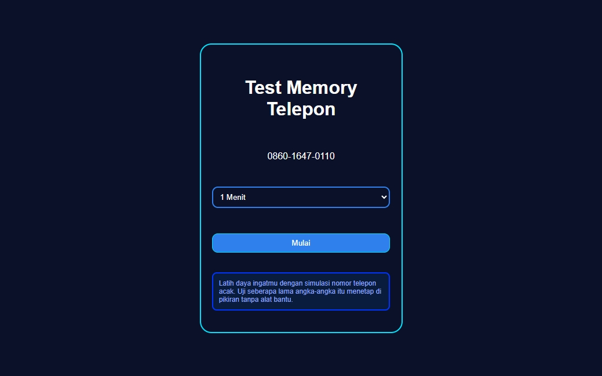
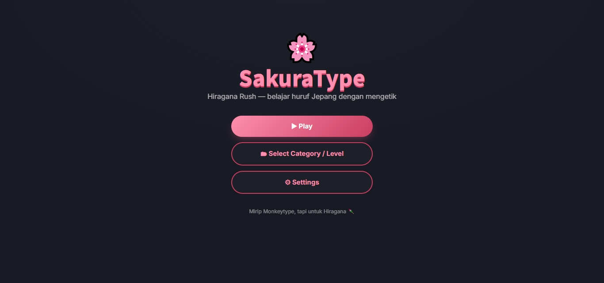
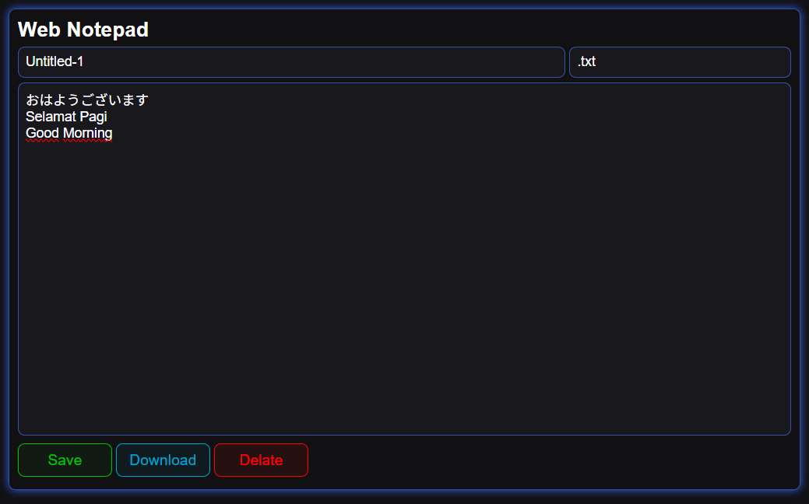

NexdyMC
Coding, Creating, and Experiment 💻✨
berbagi hasil eksperimenku di dunia Minecraft dan proyek coding lainnya.
Let's build something fun! Eheh.. >w<

Tap Tap Kuy

Memory Number Phone

SakuraType

NotePad